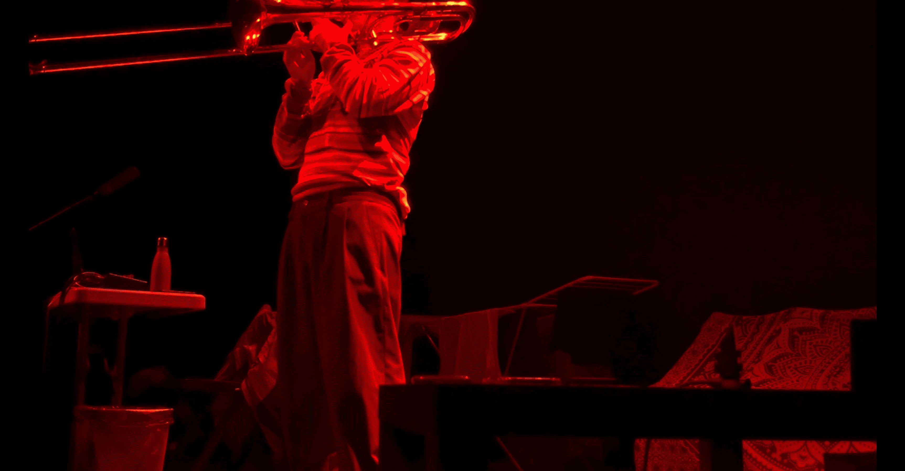
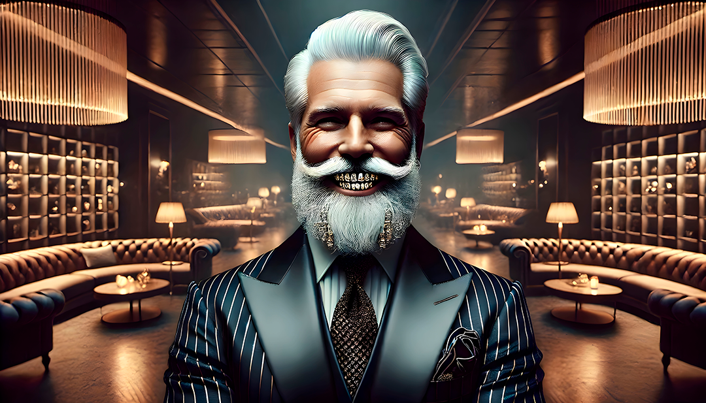
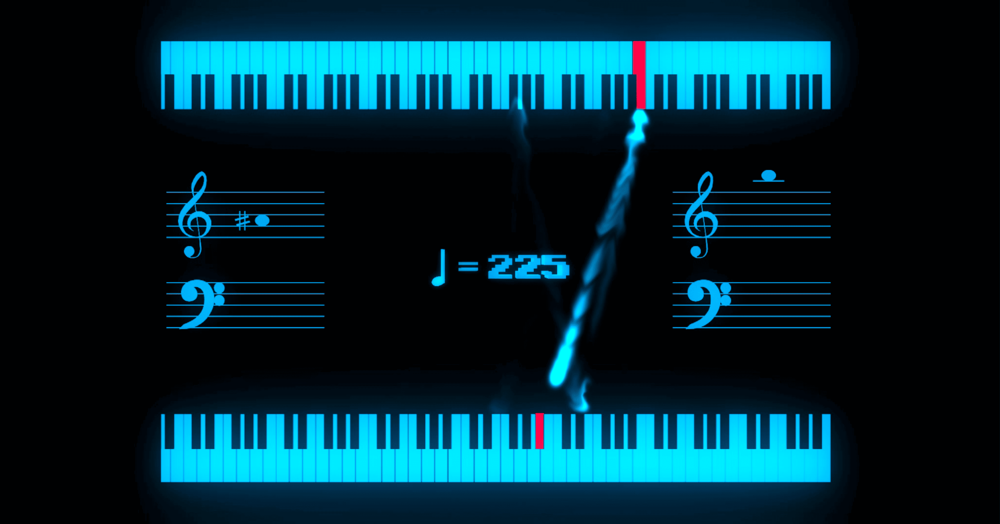
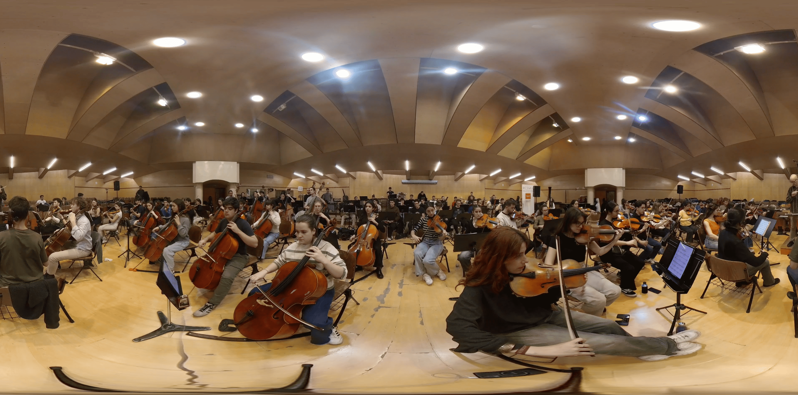
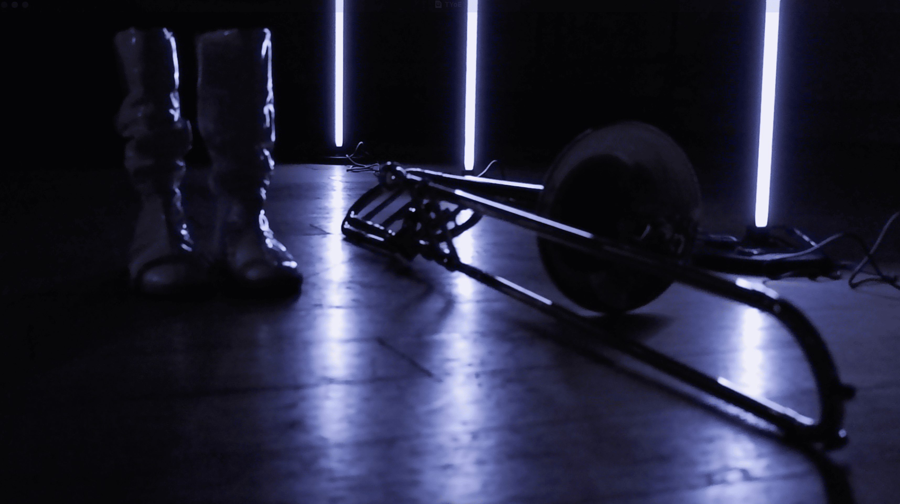
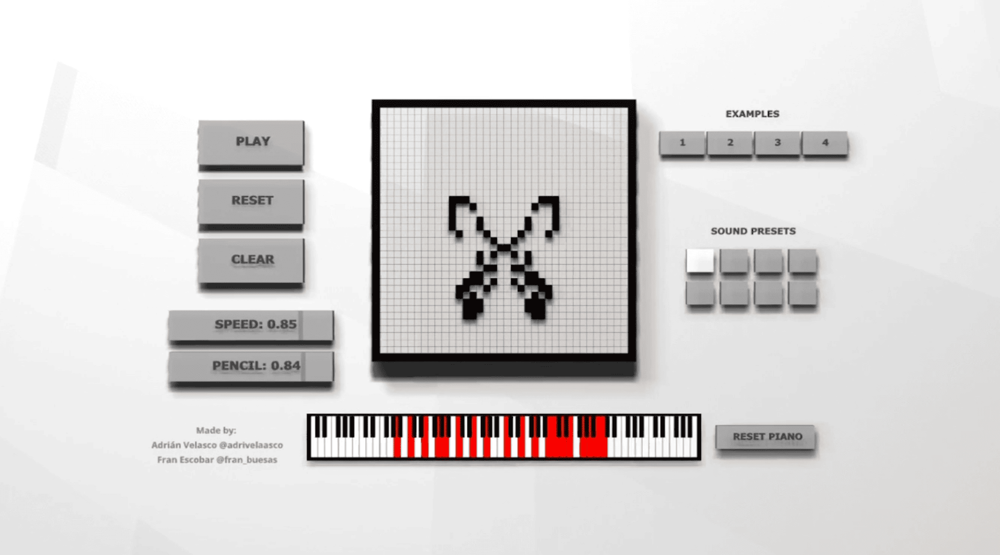
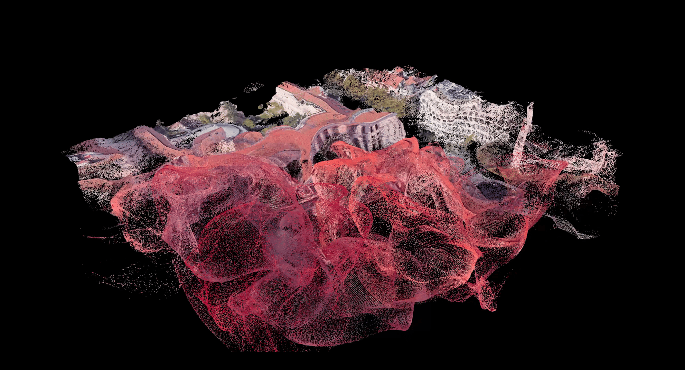
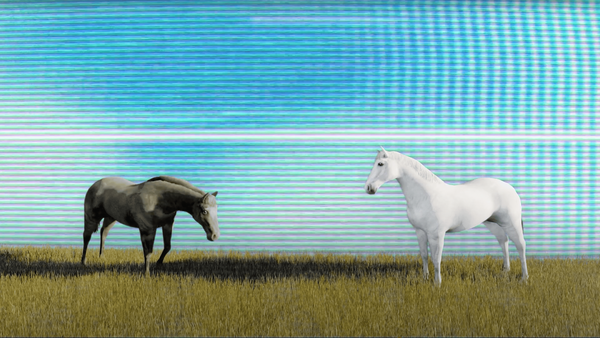
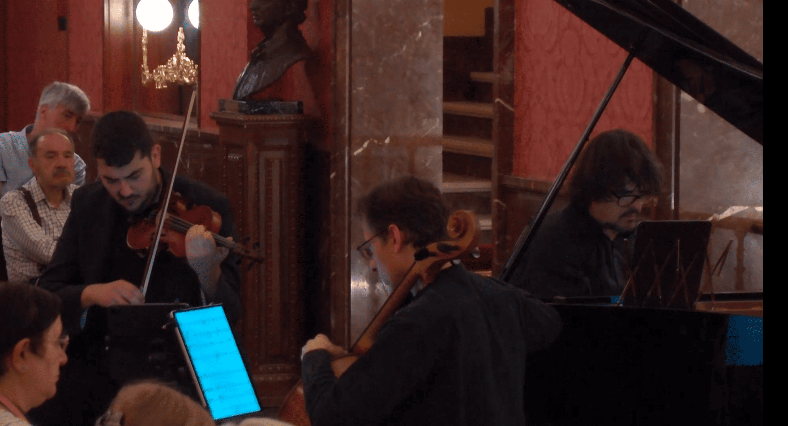
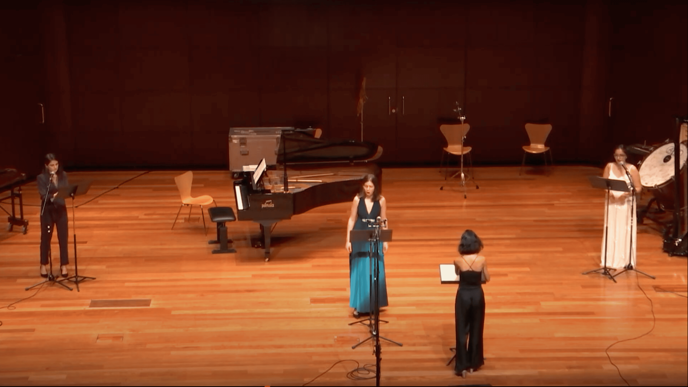

“Three Years of Evolution” showcases the intimate and dynamic relationship established between an individual, represented by the trombonist, and the demanding city that will host him for the next three years.
Independence, far from being an absolute state, becomes a continuous process of negotiation with existing structures. The trombonist does not merely struggle with or against the city but also learns from it, discovering in its challenges opportunities for growth and self-awareness.
Ultimately, it presents a personal experience, where the individual matures through the learning that arises from interaction with expectations.
Dear pianist:
This musical piece, if that’s what it is, aims to be an amusement for your study sessions. Three minigames have been gently crafted to refine certain aspects of your technique in an unusual, perhaps more enjoyable way, on your path toward the virtuoso you have always wished to become.
Pianogames lives in two versions. There’s the cozy home version and then there’s the concert version: same mini-games now framed by an introduction, an intermezzo, and a closing gesture worthy of the stage.
Game of Life is an adaptation of John Conway’s traditional game. This cellular automaton evolves deterministically according to its initial configuration, without requiring further intervention.
In this musical recreation, as the board progresses, the sound system responds to the player’s instructions—whether timbral, harmonic, or related to tempo.
3D Modelling, Sound Design and Software Communication by Adrián Velasco
Python and Game Code by Fran Escobar
Rumble, is a piece for symphony orchestra, its title borrowed from the fourth track of Quest For Fire by Skrillex. A constant loop runs throughout, taking on multiple shapes in its various iterations. This loop aims for a linear evolution over the course of the work’s 113 measures, yet it is occasionally disrupted by musical “pop-ups” that interrupt the main discourse.
Ok, wait, listen to this: there’s a moment. A moment when everything fits. The light. The shadows. The music. The words. You’re there, in front of the screen, and for one tiny yet infinite instant, you feel… something. Not satisfaction. Something much better.
A spark of electricity rising from your fingers to the back of your head. The perfect video. You did it. It’s real. Here and now.
But can the magic lasts?
Some captions published on a private Instagram account were verbalizing many thoughts that I hadn't yet been able to formulate.
This piece collects some writings by @rosello.alba, attempting to find that curious point in her texts where the chaotic nature of the micro manages to balance with the coherent nature of the macro, without taking away the work's virtue of spontaneity.
Text: @rosello.alba
Voice: @desmelenao
This is simply about messing with the Madrid Royal Conservatory of Music.